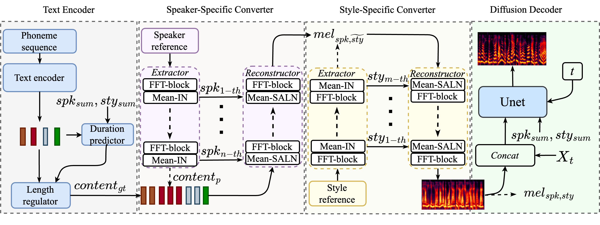

Zero-shot speaker cloning aims to synthesize speech for any target speaker unseen during TTS system building, given only a single speech reference of the speaker at hand. Although more practical in real applications, the current zero-shot methods still produce speech with undesirable naturalness and speaker similarity. Moreover, endowing the target speaker with arbitrary speaking styles in the zero-shot setup has not been considered. This is because the unique challenge of zero-shot speaker and style cloning is to learn the disentangled speaker and style representations from only short references representing an arbitrary speaker and an arbitrary style.
To address this challenge, we propose U-Style, which employs Grad-TTS as the backbone, particularly cascading a speaker-specific encoder and a style-specific encoder between the text encoder and the diffusion decoder.
Thus, leveraging signal perturbation, U-Style is explicitly decomposed into speaker- and style-specific modeling parts, achieving better speaker and style disentanglement.
To improve unseen speaker and style modeling ability, these two encoders conduct multi-level speaker and style modeling by skip-connected U-nets, incorporating the representation extraction and information reconstruction process.
Besides, to improve the naturalness of synthetic speech, we adopt mean-based instance normalization and style adaptive layer normalization in these encoders to perform representation extraction and condition adaptation, respectively. Experiments show that U-Style significantly surpasses the state-of-the-art methods in unseen speaker cloning regarding naturalness and speaker similarity.
Notably, U-Style can transfer the style from an unseen source speaker to another unseen target speaker, achieving flexible combinations of desired speaker timbre and style in zero-shot voice cloning.
1.1 The structure of the proposed model:

2. Demos -- Comparison with other methods in speaker cloning task
Corresponding to section IV-G in the paper, several samples synthesized by the proposed U-Style and other compared methods on the zero-shot speaker cloning task are listed below.
Unseen speaker reference
AnySpk
Unet-TTS
Vall-E
U-Style-100
U-Style-500
Text: 在茫茫宇宙中，有一种天体像猛兽一样。(English: In the vast universe, there is a celestial body like a beast.)
Text: 寒风和冬雨说，“我们仍然强大，你会吃尽苦头的！ (English: The cold wind said to Dongyu, 'We are still strong, you will endure all the hardships!'!)
Text: 一看到那几十个被家暴的小孩儿，超人就愤怒的要死。 (English: At the sight of the dozens of children who were subjected to domestic violence, Superman was furious to death.)
Text: 染柳烟浓，吹梅笛怨，春意知几许？(English: The willow smoke is thick, the plum flute is bitter, how much does spring know?)
Text: 有一天，我们在一座破庙里练‘摧心掌’，突然四面八方的给数十名好手围住了。(English: One day, we were practicing 'Heart Destroying Palm' in a dilapidated temple when suddenly dozens of skilled gies surrounded us from all directions.)
Text: 一阵冷峭的北风吹来，使他四周的东西都呈现出愁惨的景象。(English: A cold north wind blew, causing everything around him to present a sorrowful scene.)
Short summary: It can be found that compared with AnySpk, Unet-TTS, and Valle, the proposed U-Style has the advantage of capturing detailed unseen speakers' timbre and style
characteristics, allowing the adoption of expressive reference to guide the robust zero-shot speaker cloning of arbitrary text.
As we can observed, the pitch trajectory of the U-Style synthesized speech closely matches the pattern of the reference speech.
3. Demos -- Spealer and style cloning
Corresponding to section IV-G in the paper.
Target unseen speaker reference
Source unseen style reference
U-Style
Text: 童孙未解供耕织，也傍桑阴学种瓜。(English: Tong Sun did not yet understand the cultivation and weaving, but also learned to plant melons in the shade of mulberry trees.)
Text: 岭外音书断，经冬复历春。近乡情更怯，不敢问来人。(English: The sound outside the mountain is interrupted by a book, and the spring is repeated through winter. Being closer to the countryside is even more timid, afraid to ask anyone.)
Text: 最令人吃惊的是，穷人从事生产活动，而富人却坐享其成。(English: The most surprising thing is that the poor engage in productive activities, while the rich enjoy the benefits.)
Text: 他生性胆小懦弱，遇事优柔寡断，是不足以担当大任。(English: He is naturally timid and indecisive, making him insufficient to take on important responsibilities.)
Text: 你们竟然做出这样的事情，真是让人气愤不已！(English: It's really infuriating that you should have done such a thing!)
Text: 他们还可能肢解过死婴的尸体，用于研究目的。(English: They may also have dismembered the bodies of dead infants for research purposes.)
Short summary: It can be found that the proposed U-Style can disentangle the speaker and style in the zero-shot scenario, transferring the style from an unseen source speaker to another unseen target speaker.
However, regarding overall performance in speaker and style cloning, U-Style still has room to improve the naturalness of synthesized speech and the trade-off between timbre and expressiveness.
4. Additional demos -- zero-shot speaker cloning
Useen speaker reference
Synthesized by U-Style
Useen speaker reference
Synthesized by U-Style
Text: 无可奈何花落去，似曾相识燕归来，小园香径独徘徊。(English: Helplessly, the flowers fall, the familiar Yan returns, and the fragrant path lingers alone in the small garden)
Text: 无可奈何花落去，似曾相识燕归来，小园香径独徘徊。(English: Helplessly, the flowers fall, the familiar Yan returns, and the fragrant path lingers alone in the small garden)
synthesized
synthesized
Text: 一池萍碎。春色三分，二分尘土，一分流水。(English: A pool of crushed duckweed. Three parts of spring, two parts of dust, and one part of flowing water.)
Text: 一池萍碎。春色三分，二分尘土，一分流水。(English: A pool of crushed duckweed. Three parts of spring, two parts of dust, and one part of flowing water.)
synthesized
synthesized
Text: 谁也无法阻挡我追求艺术的脚步！你可以像猪一样的生活，但你永远都不能像猪那样快乐！(English: No one can stop my pursuit of art! You can live like a pig, but you can never be as happy as a pig!)
Text: 谁也无法阻挡我追求艺术的脚步！你可以像猪一样的生活，但你永远都不能像猪那样快乐！(English: No one can stop my pursuit of art! You can live like a pig, but you can never be as happy as a pig!)
synthesized
synthesized
Text: 谁也无法阻挡我追求艺术的脚步！你可以像猪一样的生活，但你永远都不能像猪那样快乐！(English: No one can stop my pursuit of art! You can live like a pig, but you can never be as happy as a pig!)
Text: 三个人商商量量，活有做的，饭有吃的，日子过得也还快活。(English: Three people discussed and found that there was something to do, food to eat, and a happy life.)
synthesized
synthesized
Text: 古人道得好：‘各有因缘莫羡人’。(English: The ancients said well: 'Don't envy people for their own reasons.'.)
Text: 古人道得好：‘各有因缘莫羡人’。(English: The ancients said well: 'Don't envy people for their own reasons.'.)
synthesized
synthesized
Text: 令狐少君，你今日虽然失意，他日未始不能另有佳偶。(English: Linghu Shaojun, although you are disappointed today, you cannot have another good wife in the future.)
Text: 令狐少君，你今日虽然失意，他日未始不能另有佳偶。(English: Linghu Shaojun, although you are disappointed today, you cannot have another good wife in the future.)
synthesized
synthesized
Text: 她从来没有像今天这样对厨房充满了深情。(English: She has never been so passionate about the kitchen as she is today.)
Text: 我高兴的把全班人带出去大吃大喝了一顿。(English: I happily took the whole class out and had a big meal.)
synthesized
synthesized
Text: 在惊喜之前，我已经做好了兴奋的准备。(English: Before the surprise, I was already prepared for excitement.)
Text: 你们竟然做出这样的事情，真是让人气愤不已！(English: It's really infuriating that you should have done such a thing!)
synthesized
synthesized
Text: 一阵冷峭的北风吹来，使他四周的东西都呈现出愁惨的景象。(English: A cold north wind blew, causing everything around him to present a sorrowful scene.)
Text: 她心酸，觉得精疲力尽，好象血已经冻成了冻，心也凝成了块儿。(English: She felt heartbroken and exhausted, as if her blood had frozen to freezing, and her heart had solidified into a lump.)
synthesized
synthesized
Text: 这伙歹徒如此胆大妄为、厚颜无耻，让我很是震惊。(English: I was shocked by the boldness and shamelessness of these gangsters.)
Text: 这伙歹徒如此胆大妄为、厚颜无耻，让我很是震惊。(English: I was shocked by the boldness and shamelessness of these gangsters.)